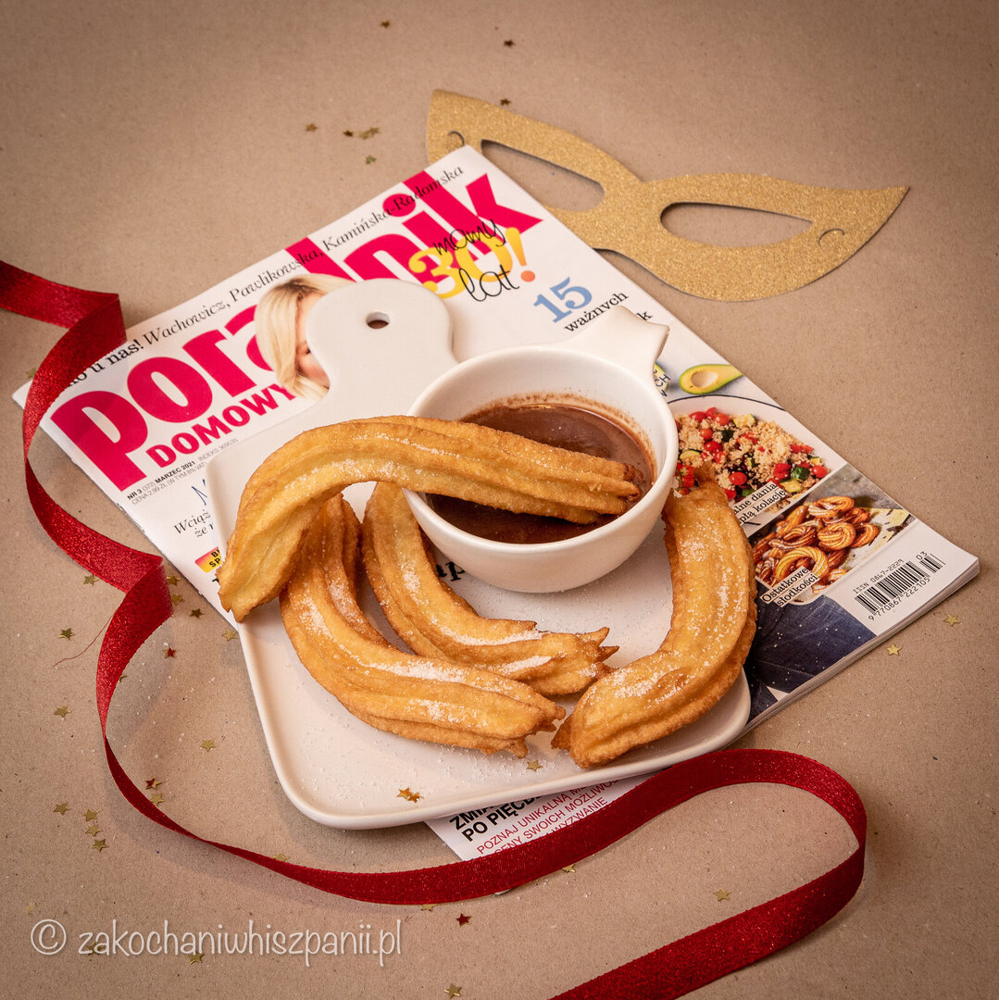
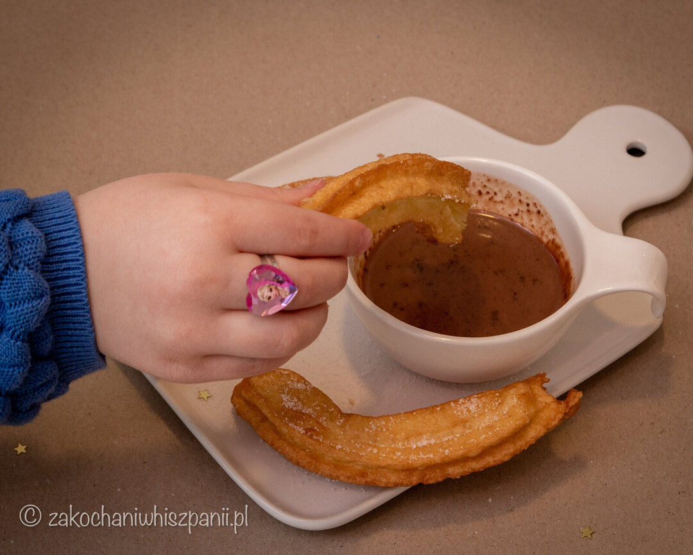

Zakochani na tropie: Churros
Rozpoczynamy nowy cykl wpisów na blogu, Zakochani na tropie - czyli poszukujemy w polskich magazynach przepisów na dania, tapas, słodkości kuchni hiszpańskiej; następnie sprawdzamy, czy potrawy wykonane wg przepisu z gazet mają coś wspólnego z Półwyspem Iberyjskim.
Luty to czas karnawału. Zainspirowani artykułem Słodkości ostatkowe z magazynu Poradnik Domowy (numer 3) przygotowaliśmy hiszpański deser. Będąc w Hiszpanii, często próbowaliśmy churros z czekoladą. Ten smak i zapach dobrze pamiętamy do dziś. Poniżej, zamieszczamy przepis prosto z czasopisma. Sprawdzimy, czy z podanych składników, przygotowując krok po kroku, uda nam się stworzyć pierwszy raz domową wersję churros.
Churros - Poradnik Domowy

Składniki
20 dag mąki, szklanka wody, 5 dag smalcu, 3 roztrzepane jajka, szczypta soli, olej do głębokiego smażenia, cukier do posypania
Przygotowanie
Na dobre churros najlepiej jest przygotować ciasto poprzedniego dnia. W garnku zagotuj wodę ze smalcem. Do wrzątku wsyp mąkę i sól, zmniejsz ogień i mocno energicznie mieszaj drewnianą łyżką. Wyrabiaj, aż masa będzie gładka i błyszcząca (jak na ptysie). Ostudź, dodaj jajka, wymieszaj. Odstaw na noc.
Następnego dnia rano rozgrzej dobrze olej w szerokim garnku. Szprycę cukierniczą napełnij ciastem i wyciskaj do gorącego oleju długie paluchy. Usmażone na złoto churros wyjmuj łyżką cedzakową na bibułę. Osącz z nadmiaru tłuszczu. Posyp cukrem i podawaj z czekoladą.
Na czekoladę wlej 2 szklanki mleka i szklankę kremówki do rondelka, doprowadź do wrzenia. Stopniowo po kawałku dodawaj 10 dag czekolady, mieszaj, gotuj, aż będzie kremowa.
Churros - sprawdzamy

Składniki mamy już przed sobą, więc do dzieła. Do wrzątku dodaliśmy wszystkie części, mieszaliśmy aż masa ciasta zgęstniała. Szkoda, że wskazówka z magazynu typu „masa jak na ptysie” dla osób, które nigdy nie przygotowały tego deseru, jest mało przydatna, bo nadal nie wiemy, jak ma wyglądać konsystencja :P
Następny krok po wystudzeniu to dodanie jajek, tak też zrobiliśmy. Kolejna wskazówka, odstawić ciasto na noc. I tu ponownie zagwozdka. W przepisie nie zamieszczono informacji, w jakie miejsce odstawić na noc masę na churros: do lodówki, czy zostawić na blacie kuchennym? My zostawiliśmy w lodówce. Musimy Wam się przyznać, że nie mogliśmy wytrzymać do następnego dnia i pozwoliliśmy sobie usmażyć od razu kilka pałeczek churros i wyszły całkiem niezłe, choć nieco suche, bo chwilę za długo je smażyliśmy.
Następnego dnia, późnym popołudniem po raz drugi zaczęliśmy smażenie hiszpańskich smakołyków. Oczywiście na złocisty kolor. Po odsączeniu z tłuszczu posypaliśmy cukrem (w zasadzie ksylitolem) i przyznajemy, tym razem okazały się bardzo smaczne.

Podsumowując, korzystając pierwszy raz z przepisu z Poradnika Domowego, wykonując krok po kroku ciasto, hiszpańskie "pączki" churros wyszły pyszne. Uważamy jednak, że do ciasta można było dodać troszkę więcej soli, szkoda, że w przepisie nie była podana konkretna ilość tego produktu. W instrukcji wykonania masy jest kilka sformułowań, które początkującego cukiernika mogą zbić z tropu. Nie było również podanych dokładnych ilość składników na gorącą czekoladę. Wykonując czekoladę z przepisu, śmiemy twierdzić, że wyszłaby zupa mleczna - my dodaliśmy o połowę mniej mleka i śmietanki, a wyszła mimo to nieco zbyt rzadka.
Z okazji zbliżających się Walentynek, fajnym pomysłem może być przygotowanie domowych churros w kształcie serca dla Walentego lub Walentynki <3